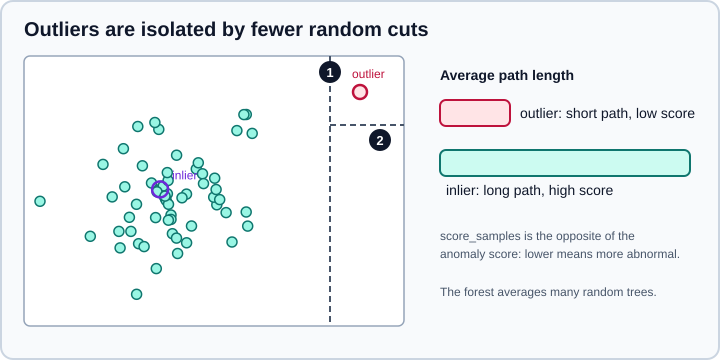

Outlier & Novelty Detection
|
This content was generated with the assistance of AI and should be verified against the official documentation before being relied on in production. |
An outlier is an observation that sits far from the rest of the data: a sensor glitch, a fraudulent transaction, a typo
in a column of ages. Detecting such points is useful for cleaning data before modelling and, in its own right, for fraud,
fault and intrusion monitoring. scikit-learn offers a family of unsupervised detectors with a shared interface. This page
targets scikit-learn 1.9 (checked in October 2026 against 1.9.1, Python 3.13, NumPy 2.5.4),
explains which detector to use, and spells out the conventions that are easy to get wrong: the sign of the scores, the
meaning of contamination, and where LocalOutlierFactor differs from the others. Examples target Python 3.13 or 3.14 and were run on Python 3.13. Every example was run on those versions
and the printed output is real.
Cleaning outliers in a data frame (rules, IQR fences, winsorising) is in Data Cleaning; here the detectors are learned from the data. For mixture-model densities see Gaussian Mixture Models; for density-based clustering that labels noise points, see Clustering.
Outlier detection versus novelty detection
The two tasks differ in what the training data is allowed to contain, and that decides which estimators and which methods are valid.
| Outlier detection | Novelty detection | |
|---|---|---|
Training data |
Contains outliers; the goal is to find them in the data you already have |
Clean (no outliers); the goal is to judge new observations later |
Also called |
Unsupervised anomaly detection |
Semi-supervised anomaly detection |
Typical flow |
|
|
Assumption |
Outliers lie in low-density regions and are not a dense cluster of their own |
Novelties may form a dense cluster, as long as it lies in a low-density region of the training data |
The common API for the detectors is:
estimator.fit(X_train)
estimator.predict(X_test) # inliers are 1, outliers are -1
estimator.score_samples(X_test) # raw score: lower means more abnormal
estimator.decision_function(X_test) # negative means outlier, non-negative means inlierpredict thresholds the raw score, and contamination controls where that threshold falls. Note the labels: 1 for an
inlier and -1 for an outlier, which is the opposite of many binary-label conventions (1 for the rare class).
| Estimator | Idea | Notes from the docs |
|---|---|---|
|
Isolates points with random splits; anomalies need fewer splits |
Performs reasonably well and is efficient in high dimensions |
|
Compares each point’s local density with its neighbours' |
Performs reasonably well; special rules for novelty use (below) |
|
Learns a frontier around the training data with a kernel |
Sensitive to outliers in the training set; needs careful tuning of |
|
Linear one-class SVM trained online |
Scales linearly with the number of samples; combine with a kernel approximation for a non-linear boundary |
|
Robust Gaussian fit, outlyingness is the Mahalanobis distance |
Assumes inliers are Gaussian; one ellipse only |
Outlier detection in high dimensions, or without assumptions about the distribution of the inliers, is very challenging; no detector is best everywhere.
Comparing the detectors
The data below has two Gaussian clusters plus 40 uniformly scattered outliers (about 4.8 percent). Each detector is given the true contamination so the comparison is about the ranking, not the threshold:
import numpy as np
from sklearn.ensemble import IsolationForest
from sklearn.neighbors import LocalOutlierFactor
from sklearn.svm import OneClassSVM
from sklearn.covariance import EllipticEnvelope
from sklearn.metrics import roc_auc_score
rng = np.random.default_rng(42)
inliers = np.vstack([rng.normal([0, 0], 0.5, (400, 2)), rng.normal([4, 4], 1.0, (400, 2))])
outliers = rng.uniform(-6, 10, (40, 2))
X = np.vstack([inliers, outliers])
y_true = np.r_[np.ones(len(inliers), int), -np.ones(len(outliers), int)] # 1 inlier, -1 outlier
contamination = len(outliers) / len(X)
print(f"contamination={contamination:.3f}")
detectors = {
"EllipticEnvelope": EllipticEnvelope(contamination=contamination, random_state=0),
"IsolationForest": IsolationForest(n_estimators=200, contamination=contamination, random_state=0),
"LocalOutlierFactor": LocalOutlierFactor(n_neighbors=35, contamination=contamination),
"OneClassSVM": OneClassSVM(nu=contamination, kernel="rbf", gamma=0.1),
}
for name, det in detectors.items():
pred = det.fit_predict(X)
flagged = int((pred == -1).sum())
caught = int(((pred == -1) & (y_true == -1)).sum())
print(f"{name:19s} flagged={flagged:3d} true outliers caught={caught:2d}/{len(outliers)}")
iso = detectors["IsolationForest"]
print("offset_:", round(iso.offset_, 4))
print("score_samples (lower = more abnormal):", iso.score_samples(X[[0, -1]]).round(3))
print("decision_function sign matches predict:",
bool(((iso.decision_function(X) < 0) == (iso.predict(X) == -1)).all()))
print("AUC IsolationForest:", round(roc_auc_score(y_true, iso.score_samples(X)), 3))contamination=0.048 EllipticEnvelope flagged= 40 true outliers caught=32/40 IsolationForest flagged= 40 true outliers caught=37/40 LocalOutlierFactor flagged= 40 true outliers caught=37/40 OneClassSVM flagged= 42 true outliers caught=33/40 offset_: -0.5686 score_samples (lower = more abnormal): [-0.4 -0.587] decision_function sign matches predict: True AUC IsolationForest: 0.994
Source: Comparing anomaly detection algorithms for outlier detection on toy datasets and the Outlier detection User Guide.
("Caught" is below 40 for every detector partly because uniformly scattered points sometimes fall inside the clusters and
are real inliers in all but name; evaluating an unsupervised detector against labels always has this caveat.) The single
Gaussian ellipse of EllipticEnvelope fits two clusters worse than the others, which is expected; because the true labels
exist in this toy example, roc_auc_score can rank the raw scores. In real work you rarely have such labels.
IsolationForest
IsolationForest builds many random trees. Each split picks a feature at random and a split value at random between that
feature’s minimum and maximum. A point far from everyone else is cut off by few splits; a point deep in the cloud needs
many. The average path length over the forest is the normality measure, and the score is a monotone transform of it.

-
The first cut separates the rare point from the cloud.
-
The second cut isolates it completely; the inlier circled in violet would need many more cuts.
Parameters:
-
n_estimators(default 100): trees in the forest; 100 is usually enough. -
max_samples(default"auto"): the number of rows drawn for each tree,min(256, n_samples)for"auto". A small subsample is part of the method and makes it fast on large data. -
contamination(default"auto"): see below. -
max_features(default 1.0) andbootstrap: feature and row sampling per tree. -
warm_start=Truewithset_params(n_estimators=...)adds trees to an existing forest instead of rebuilding it. -
random_state: fix it; the forest is random.
The trees are ExtraTreeRegressor instances with their maximum depth set to the ceiling of log2 of the number of rows used
for that tree. Because each split value is drawn uniformly between a feature’s minimum and maximum, rescaling one feature does
not change how that feature is cut, so IsolationForest is much less sensitive to feature units than the distance-based
detectors; it still treats every feature as equally likely to be picked for a split.
LocalOutlierFactor
LOF compares a point’s local density (inverse of the average distance to its n_neighbors) with the densities of its
neighbours. A point whose density is much lower than that of its neighbours has a high outlier factor. It can find a
point that is unremarkable globally but anomalous relative to its neighbourhood, e.g. a slightly sparse point next to a
very tight cluster.
-
n_neighbors(default 20): the docs say this value works well in general. If more than about 10 percent of the data are outliers, use a larger value (the example above uses 35). -
contamination(default"auto"): as below. -
metricandp: distance; scale features first, because the distance dominates the result. -
novelty(defaultFalse): decides which methods exist.
By default LOF is an outlier detector only. It has fit_predict and the attribute negative_outlier_factor_ (the
opposite of the LOF score; values near -1 are inliers, much lower values are outliers), but no predict,
decision_function or score_samples:
import numpy as np
from sklearn.neighbors import LocalOutlierFactor
rng = np.random.default_rng(42)
inliers = np.vstack([rng.normal([0, 0], 0.5, (400, 2)), rng.normal([4, 4], 1.0, (400, 2))])
outliers = rng.uniform(-6, 10, (40, 2))
X = np.vstack([inliers, outliers])
lof = LocalOutlierFactor(n_neighbors=35, contamination=len(outliers) / len(X))
labels = lof.fit_predict(X)
print("negative_outlier_factor_ range:",
lof.negative_outlier_factor_.min().round(2), lof.negative_outlier_factor_.max().round(2))
print("LOF has predict (novelty=False):", hasattr(lof, "predict"))
print("LOF has score_samples (novelty=False):", hasattr(lof, "score_samples"))
# novelty detection: fit on clean data, then score new points
X_train = inliers
X_new = np.array([[0.2, -0.1], [4.5, 3.8], [8.0, -5.0]])
lof_n = LocalOutlierFactor(n_neighbors=35, novelty=True).fit(X_train)
print("novelty LOF predict:", lof_n.predict(X_new), "score_samples:", lof_n.score_samples(X_new).round(2))
try:
LocalOutlierFactor().fit(X_train).predict(X_new)
except AttributeError as e:
print("AttributeError:", str(e)[:200])negative_outlier_factor_ range: -9.74 -0.96 LOF has predict (novelty=False): False LOF has score_samples (novelty=False): False novelty LOF predict: [ 1 1 -1] score_samples: [-0.99 -1. -8.22] AttributeError: This 'LocalOutlierFactor' has no attribute 'predict'
Source: scikit-learn User Guide, Local Outlier Factor and Novelty detection with Local Outlier Factor.
Which methods exist for which mode:
| Method | novelty=False (outlier detection) |
novelty=True (novelty detection) |
|---|---|---|
|
Available |
Not available |
|
Not available |
Only on new, unseen data |
|
Not available |
Only on new, unseen data |
|
Not available (use |
Only on new, unseen data |
|
Available |
Available |
With novelty=True calling predict, decision_function or score_samples on the training rows gives wrong results, and
predict(X_train) will not match fit_predict. Fit once, and score only data that was not in fit.
One-class SVM, SGDOneClassSVM and EllipticEnvelope
OneClassSVM learns a smooth frontier around the training data: points inside are inliers, points outside are abnormal.
Its important parameters are nu (an upper bound on the fraction of training errors and a lower bound on the fraction of
support vectors: roughly the share of the training data allowed outside the frontier; default 0.5, in (0, 1]) and the kernel
(default "rbf") with its gamma (default "scale"), for which there is no exact rule: tune it. It is sensitive to outliers
in the training set, so it fits novelty detection (clean data) better than outlier detection, and its cost is at best
quadratic in the number of samples. Scale the features first; the RBF kernel is distance-based.
For large data, SGDOneClassSVM is an online linear one-class SVM whose cost grows linearly with the sample count.
Combined with a kernel approximation such as Nystroem it approximates the kernelised model:
import numpy as np
from sklearn.kernel_approximation import Nystroem
from sklearn.linear_model import SGDOneClassSVM
from sklearn.pipeline import make_pipeline
from sklearn.preprocessing import StandardScaler
from sklearn.svm import OneClassSVM
rng = np.random.default_rng(42)
X_train = np.vstack([rng.normal([0, 0], 0.5, (400, 2)), rng.normal([4, 4], 1.0, (400, 2))])
X_new = np.array([[0.2, -0.1], [4.5, 3.8], [8.0, -5.0]])
ocsvm = make_pipeline(StandardScaler(), OneClassSVM(nu=0.02, gamma="scale")).fit(X_train)
print("OCSVM predict:", ocsvm.predict(X_new))
sgd = make_pipeline(
StandardScaler(),
Nystroem(gamma=0.3, n_components=100, random_state=0),
SGDOneClassSVM(nu=0.02, random_state=0),
).fit(X_train)
print("SGDOneClassSVM predict:", sgd.predict(X_new))OCSVM predict: [ 1 1 -1] SGDOneClassSVM predict: [ 1 1 -1]
EllipticEnvelope fits a robust estimate of location and covariance (the Minimum Covariance Determinant) and scores each
point by its Mahalanobis distance. It assumes the inliers are roughly Gaussian and so describes one ellipse; it is a good,
interpretable baseline for a single unimodal cluster of numeric features and a poor one for multimodal data, as the
comparison above shows. Its contamination default is 0.1.
The meaning of contamination
contamination is the assumed proportion of outliers. It does one thing: it sets the threshold (stored in offset_)
that converts raw scores into the -1/1 labels returned by predict. It does not change the ranking of the scores.
-
A float in (0, 0.5] sets the threshold at the corresponding percentile of the training scores, so
predictflags about that fraction of the training data by construction. -
"auto"(the default for IsolationForest and LocalOutlierFactor since 0.22; it used to be 0.1) uses the rule from the original paper:offset_is -0.5 for IsolationForest and -1.5 for LOF. The number of flagged points is then data dependent and can be surprisingly large.
import numpy as np
from sklearn.ensemble import IsolationForest
from sklearn.neighbors import LocalOutlierFactor
rng = np.random.default_rng(0)
X = np.vstack([rng.normal(0, 1, (300, 2)), [[8, 8], [-7, 9]]]) # 300 normal points and 2 clear outliers
iso = IsolationForest(random_state=0).fit(X)
print("IF auto offset", iso.offset_, "flagged", int((iso.predict(X) == -1).sum()))
lof = LocalOutlierFactor()
pred = lof.fit_predict(X)
print("LOF auto offset", lof.offset_, "flagged", int((pred == -1).sum()))IF auto offset -0.5 flagged 34 LOF auto offset -1.5 flagged 19
Only two points are clearly anomalous, yet the defaults flag 34 and 19: on Gaussian data the tails alone cross the paper’s
threshold. When you can estimate the real rate (from domain knowledge or an audit of a sample), set contamination to it;
when you cannot, rank by score_samples or decision_function and choose a cut-off by review. For OneClassSVM the
equivalent knob is nu.
Choosing a detector
| Situation | Start with |
|---|---|
General tabular data, many features, a few thousand to millions of rows |
|
Anomalies defined relative to local density; clusters of different density |
|
Clean training set, new points arrive later |
|
One unimodal, roughly Gaussian cluster of numeric features |
|
Features with very different scales or types |
Scale numeric features and encode categoricals first, inside a pipeline |
Wrapping a detector in a Pipeline works because the final estimator exposes predict, decision_function and
score_samples, so scaling lives in the same object (see Pipelines).
Detectors are not scored like classifiers: evaluating them needs labelled anomalies (precision-recall or ROC AUC, see
Metrics & Scoring) or manual review of the top-ranked rows.
Pitfalls
-
Unscaled features: distance-based detectors (LOF, OneClassSVM, EllipticEnvelope) are dominated by the largest column.
-
Using
LocalOutlierFactorwithnovelty=Trueon training rows, or callingpredicton it withoutnovelty=True. -
Training a
OneClassSVMon data that still contains the anomalies, then wondering why the frontier is wide. -
Believing the fraction flagged: it is
contaminationby construction, not a measurement of how many outliers exist. -
Reading the scores' sign backwards:
score_samplesanddecision_functionare lower = more abnormal, whilenegative_outlier_factor_is the negative of the LOF score. All are the opposite of an "anomaly score" that grows with abnormality. -
Treating every flagged row as an error: an outlier may be the most interesting record in the data. Look before deleting, and remember that removing outliers before the train/test split leaks information about the test set (see Common Pitfalls: Leakage & Randomness).
-
Evaluating on the training data: fit on one part and check the flagged rows on held-out data (Train/Test Split).